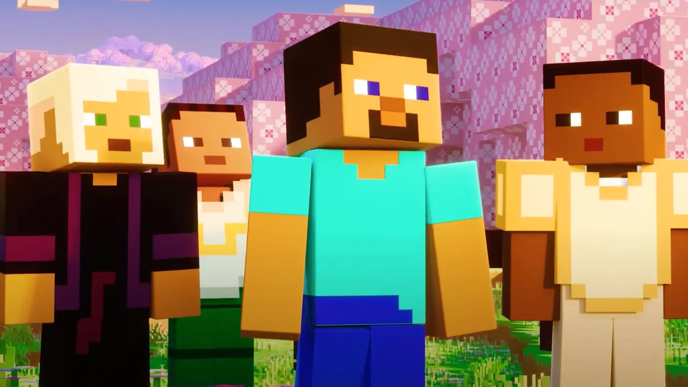

Gutsz 11.10.2023
Разработчики из студии Mojang запустили ежегодное пользовательское голосование, в результате которого будет выбран новый моб для игры. Несмотря на возможность игроков самих определить будущий контент, это вызвало серьезную критику со стороны фанатов популярной песочницы. Геймеры обвиняют во всех бедах политику Microsoft и призывают авторов игры услышать просьбы своих поклонников.
Геймеры предлагают разработчикам обратить внимание на отзывы сообщества Minecraft. Вместо голосования, им стоит добавлять в игру больше существ и работать над новыми улучшениями для игры. В противном случае пользователи угрожают перейти на сторонние сервера, где авторы модов делают всю работу за Mojang.